SmartTools Add-on Manual
SmartCloth Suite Manual
Version 1.0.0 / November 19, 2026 / For Blender 5.1.2
SmartCloth Suite is a companion add-on designed to be used with the separately installed cloth simulation add-on "Simply Cloth Studio". It calls the public operations of Simply Cloth Studio and adds batch preparation, a switch to a lightweight display, automatic adjustment of collision distances, inspection (preflight), and baking with inspection before and after. The same tab also includes switching a skirt between bone-driven and cloth-driven motion, "Quick Rigid" for attaching rigid bodies, and "Jiggle Physics" for making bones jiggle. Quality adjustment, inspection, "Safe Bake", skirt switching, Quick Rigid, Jiggle Physics, and more work even without Simply Cloth Studio.
Compare bone and cloth motion at frame 16
Switch the same skirt between bone and cloth motion. At frame 16 the waistband follows the body while the simulated hem trails behind.
- Same garment
- Stop at frame 16
- Compare bone and cloth hems

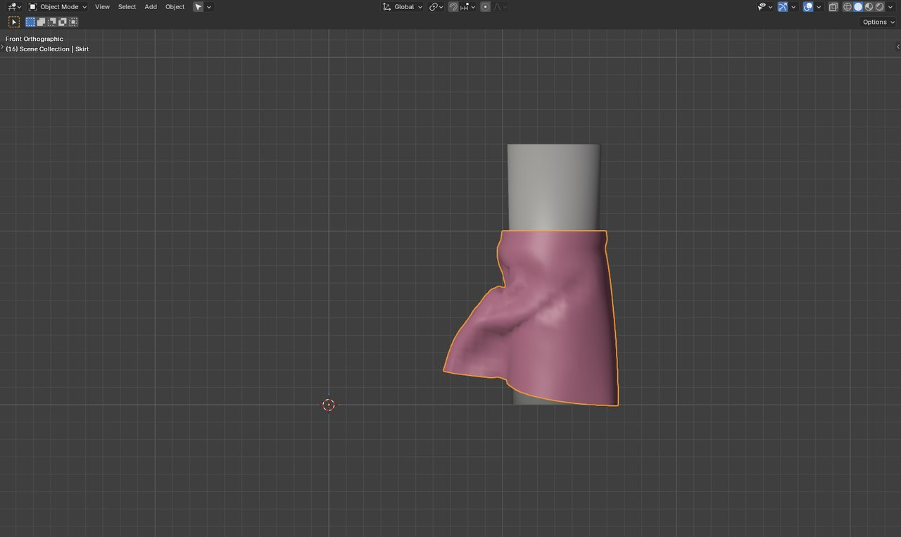
Once a garment is set up, compare bone-following and simulated motion at precisely the same frame. Comparison reference · Simply Cloth Pro
Before you try it Use the simulation cache and starting frame specified in the walkthrough.
1. What This Add-on Does
An add-on that handles cloth (fabric simulation) preparation, lightweight display, inspection, and safe baking for clothing, plus rigid bodies (Quick Rigid) and bone jiggle (Jiggle Physics), all in a single Sidebar tab.
- On the selected clothing, perform Simply Cloth Studio cloth creation, quality settings, collision distance adjustment, top pin (fixing) creation, and collider settings in a single operation (undoable with one Undo) ("Smart Setup").
- Apply the four quality profiles "Preview", "Balanced", "Production", and "Hero" to multiple cloths at once.
- Lower cloth quality and hide heavy modifiers only while you work to keep things light, then restore the original state later ("Apply Batch Preview", "Restore Preview State").
- Determine collision distances automatically from mesh density. Add collision margin by looking at motion in upcoming frames. Add spacing between layered garments.
- Create vertex groups for sharply bent areas, pin candidates, and proximity to the body, and inspect the cloth settings for problems and write them to a report ("Run Preflight").
- Inspect first, then bake the cloth ("Safe Bake") or run the Simply Cloth Studio finishing step ("Safe Finish").
- Switch clothing such as a skirt between a bone-driven state and a cloth-driven state. The assignments are saved on the clothing and can be reused.
- Transfer the motion of baked cloth onto the costume bones ("Cloth to Garment Bones").
- Attach rigid bodies (solid objects that fall and collide under physics) to meshes, and handle presets and baking (Quick Rigid).
- Add jiggle to bones such as hair or tails, and bake it (Jiggle Physics).
- You want to attach cloth to a character's clothing in one go and check for setting problems before baking.
- You want to lighten the screen in a heavy scene containing cloth, only while posing.
- You want a skirt to be driven by bones normally and by cloth only for the final pass.
- You want to turn the motion of baked cloth into bone animation that you can fix by hand.
- You want to quickly create rigid body motion for dropping or rolling small props.
- You want hair locks or a tail to move with secondary jiggle motion.
At a Glance
This is how the screen changes when you use this add-on. Chapter 5 walks through the exact steps in the "Example" boxes for each feature.
ExampleAdd Rigid Bodies to Blocks and Drop Them onto the Floor(demonstrated on the Floor and three cubes)
Just select the cubes and click "Add Active", then select the Floor and click "Add Passive", and they become rigid bodies that fall and collide under physics. On playback, the upper cubes fall and hit the cubes below and the Floor.
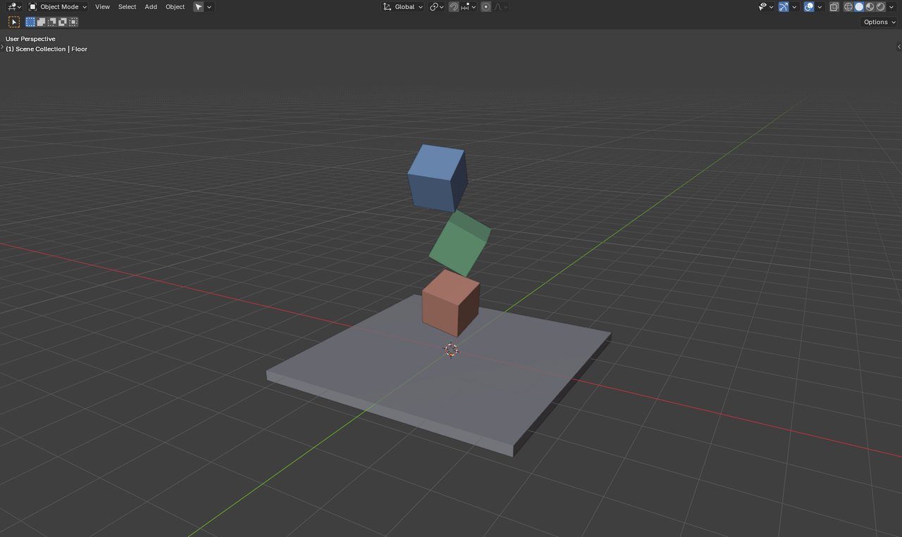
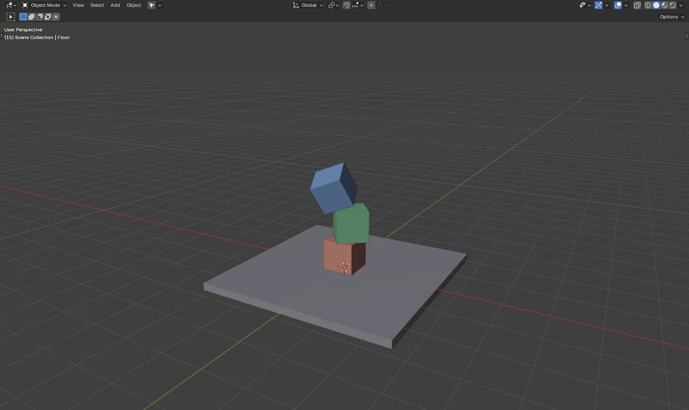
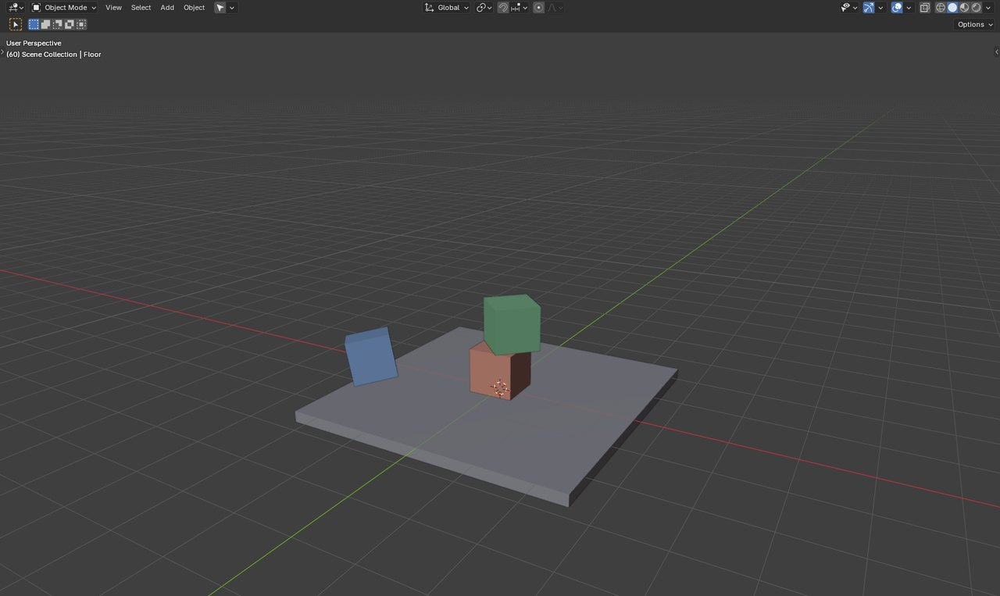
- Select the three cubes, and click "Add Active" in "Quick Rigid" > "Rigid Body Setup".
- Select the Floor, and click "Add Passive".
- Play back and advance the frames.
What to look for: At frame 1, all three cubes float in the air. On playback, they all fall: the red cube lands on the Floor, the green cube lands on top of the red one, and the blue cube is knocked away and falls to the Floor. The Floor (passive) does not move and serves as the object they collide with.
ExampleThe Hair Strand Lags and Sways When the Head Moves(demonstrated on the Suzanne Head and the Hair Strand)
When you add jiggle to bones, bones without keys sway with a lag behind their parent's motion. Here, only the Head has keys, and the bones of the Hair Strand have none.
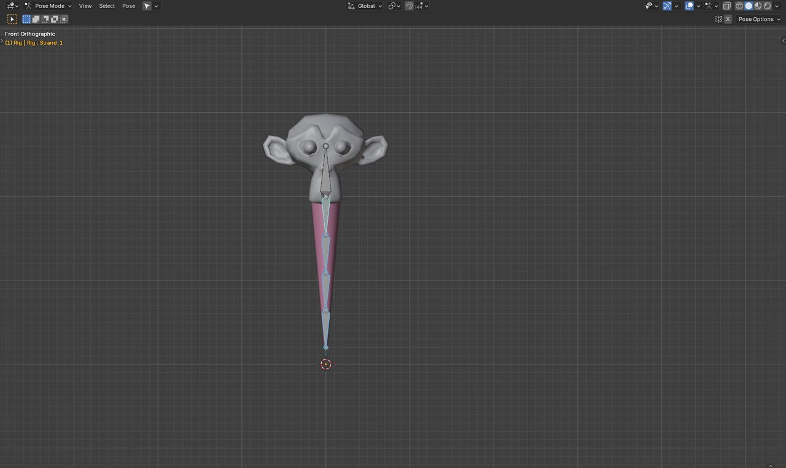
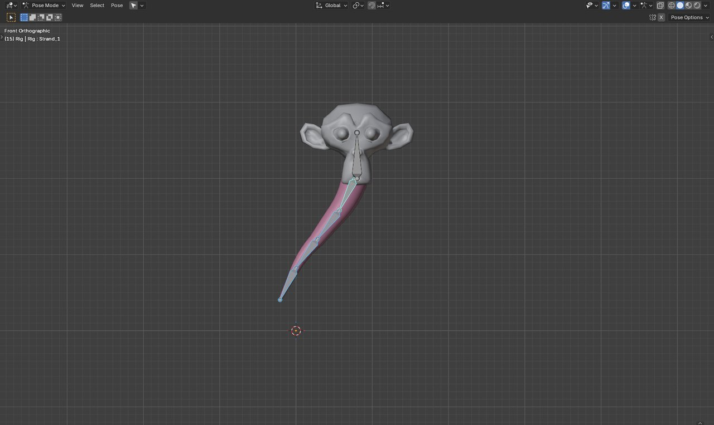
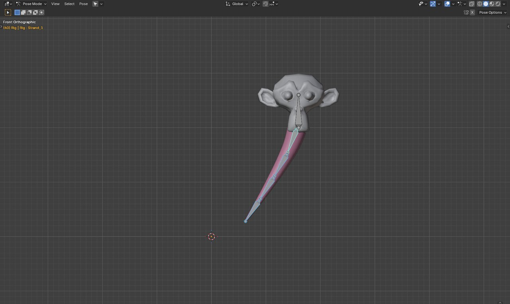
- Set "Jiggle Callbacks" in "Always-on Toggles" to "On".
- Turn on "Enable Scene Jiggle" in "Jiggle Physics" > "Scene Settings".
- Select the armature, and click "Enable Armature Jiggle" in "Armature".
- In Pose Mode, select all four strand bones, and make the top one active.
- Click "Enable Bone Jiggle" in "Active Bone", and set "Gravity" to 0.5, "Root Elasticity" to 0.95, "Length Elasticity" to 0.95, "Angle Elasticity" to 0.7, and "Air Drag" to 0.2.
- Click "Copy Settings to Selected" in "Utilities / Bake / Presets" to give the other three bones the same values.
- Play back from the first frame.
What to look for: At rest, the Hair Strand hangs straight down. While the Head moves to the right, the tip of the Hair Strand trails behind to the left. Even after the Head stops, the Hair Strand does not return right away, and gradually comes back down.
2. Key Features
This chapter walks through the features unique to this add-on, using numbered callouts on each figure. The numbers in a figure match the numbered list below it. Click a figure to enlarge it. Each individual setting is described under its own heading in Chapter 5.
2-1. Smart WorkflowTop Selling Point
To give clothing cloth motion, you normally set cloth creation, quality values, collision distance, top fixing (pin), and the body collider one after another on separate screens. "Smart Setup" performs Simply Cloth Studio cloth creation and the additional SmartCloth Suite settings in a single run, and can be undone with one Undo. Clothing that already has cloth is not recreated; only the missing settings are added.
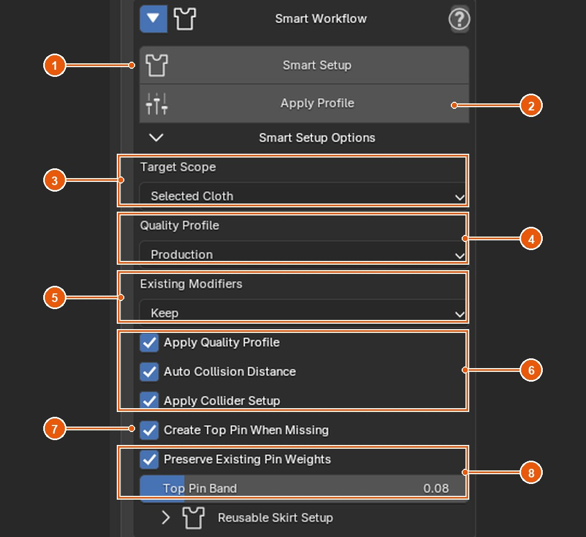
- 1Smart Setup: Creates the cloth, then performs the settings ⑥ to ⑧. Can be clicked when Simply Cloth Studio is "Ready"
- 2Apply Profile: Applies only the quality profile values of ④. Does not replace the fabric material settings. Works even without Simply Cloth Studio
- 3Target Scope: Active Cloth, Selected Cloth, All Cloth in Scene
- 4Quality Profile: Preview, Balanced, Production, Hero. Later ones are finer and heavier
- 5Existing Modifiers: Whether to keep, apply, or remove the modifiers the clothing already has
- 6Follow-up Processes: Apply Quality Profile, Auto-Adjust Collision Distance, Apply Collider Settings. Only the checked ones are performed
- 7Create Top Pin When Missing: Creates a vertex group (pin) that fixes the fabric on the top band of the clothing
- 8Preserve Existing Pin Weights / Top Pin Band: Whether to keep existing pin weights, and what fraction of the clothing height, from the top, becomes the pin
- Select the clothing mesh.
- In the "Smart Cloth" tab of the Sidebar (N panel), open "Smart Workflow", and in "Smart Setup Options" choose ③ Target Scope, ④ Quality Profile, and ⑤ Existing Modifiers.
- Use ⑥ to ⑧ to decide the follow-up processes and the top pin.
- Click ① "Smart Setup".
- ① can be clicked only when Simply Cloth Studio is "Ready". ② Apply Profile works even without it.
- ② applies only the quality values, so you can check the motion in "Preview", then change ④ to "Production" and click ②.
- If you make a mistake, a single Undo (Ctrl+Z) reverts everything at once.
Settings in detail: 5-4. Smart Workflow
2-2. Skirt Bone / Cloth SwitchingSee the Figures
Switch a skirt between a bone-driven state and a cloth-driven state (cloth calculation) with a single button. You can use light bone motion while posing and let the cloth sway only for the final pass. Switching does not change the skin weights. The clothing, armature, and bone names are not hard-coded; you assign them here and save them on the clothing, so they can be reused for other clothing. The three figures below compare frame 16 of the same hip motion with bones, with cloth, and after returning to bones.


- 1Waist: Moves along with the body
- 2Hem: Lags behind the motion because of the cloth calculation
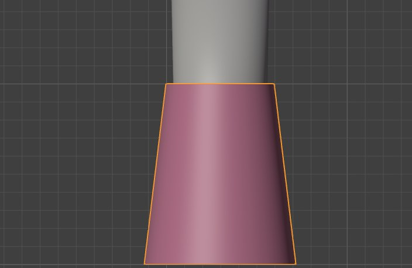
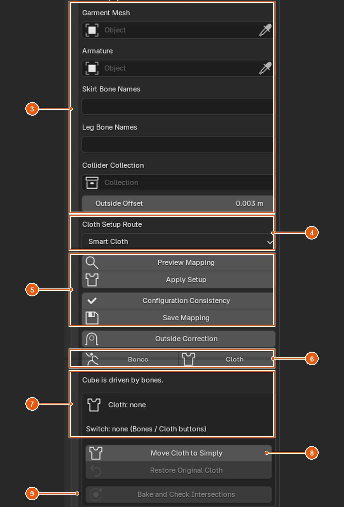
- 3Assignments: Costume mesh, armature, skirt bone names, leg bone names, collision target collection, and outside offset. Names are not hard-coded; specify them here
- 4Cloth Setup Route: "Smart Cloth" prepares the setup with Blender's standard cloth (Simply Cloth Studio is not needed). "Simply Cloth Studio" calls its cloth creation
- 5Check > Apply > Consistency > Save: Check Assignments, Apply Settings, Configuration Consistency, Save Assignments. Adding and removing the outside correction (a correction that pushes the clothing out from the body) is also done here
- 6Bones / Cloth: Switches how it is driven. The button for the current state is shown as pressed
- 7Status Lines: The current drive mode, the kind of cloth (Simply-based, own cloth, none), and what is used for switching
- 8Move Cloth to Simply: Replaces the current cloth with Simply Cloth Studio cloth. You can undo it with "Restore Original Cloth"
- 9Bake and Check Intersections: Bakes the fabric and reports the number of vertices that went inside the body and the height of the lowest point
- In "Reusable Skirt Setup" inside "Smart Workflow", enter the assignments in ③.
- Choose the cloth setup route in ④. If Simply Cloth Studio is not installed, choose "Smart Cloth".
- In ⑤, click "Preview Mapping", then "Apply Setup", then "Configuration Consistency", in that order, and if everything looks good, click "Save Mapping".
- Use "Bones" and "Cloth" in ⑥ to switch how it is driven.
- The assignments are saved on the clothing, so they remain even after you reopen the file.
- "Configuration Consistency" only checks whether the assignments and modifiers match. Check sinking with the check in ⑨ and by eye.
- Even if you switch with ⑧, you can recreate the original cloth with "Restore Original Cloth".
Settings in detail: 5-5. Reusable Skirt Setup
2-3. Jiggle Physics (Bone Jiggle)See the Figures
Make locks of hair, tails, ornaments, and the like sway with a delay after the motion. Just mark the bones you want to jiggle and set the values, and jiggle that follows the parent bone motion is calculated during playback. You only need to key the original bones, not the jiggle itself. The resulting jiggle can be baked into ordinary keyframes with "Bake Jiggle". The four figures below are an example where only the head is keyed, and the lock bones use Gravity 0.5, Root Elasticity 0.95, Length Elasticity 0.95, Angle Elasticity 0.7, and Air Drag 0.2.
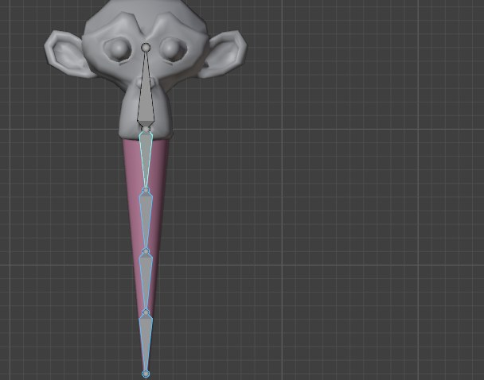

- 1Tip of the Lock: Moves later than the head


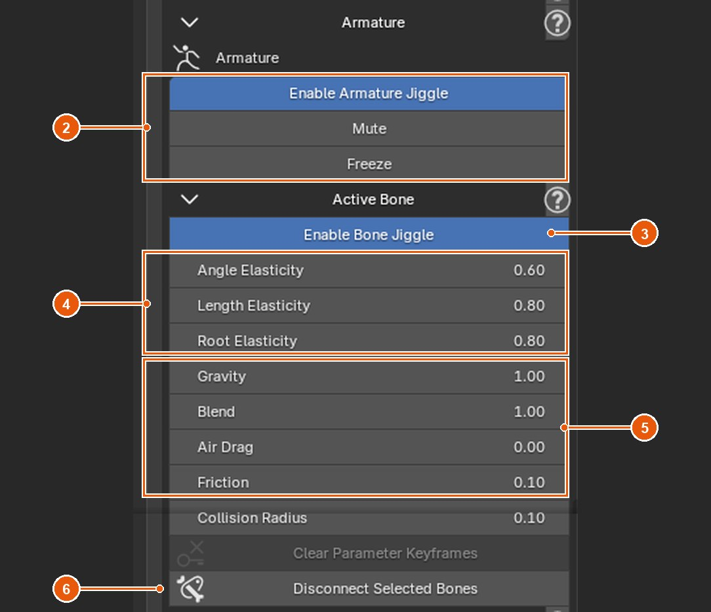
- 2Enable Armature Jiggle / Mute / Freeze: Turn jiggle on, temporarily turn it off, stop the calculation (the state after baking)
- 3Enable Bone Jiggle: Makes the selected bone jiggle
- 4Angle Elasticity / Length Elasticity / Root Elasticity: The strength of the pull back toward the original direction, length, and root. The larger, the stiffer
- 5Gravity / Blend / Air Drag / Friction: Blend of 0 is no jiggle and 1 is all of it. Air Drag is the loss of momentum
- 6Disconnect Selected Bones: Length Elasticity has no effect on connected bones, so this removes the connection
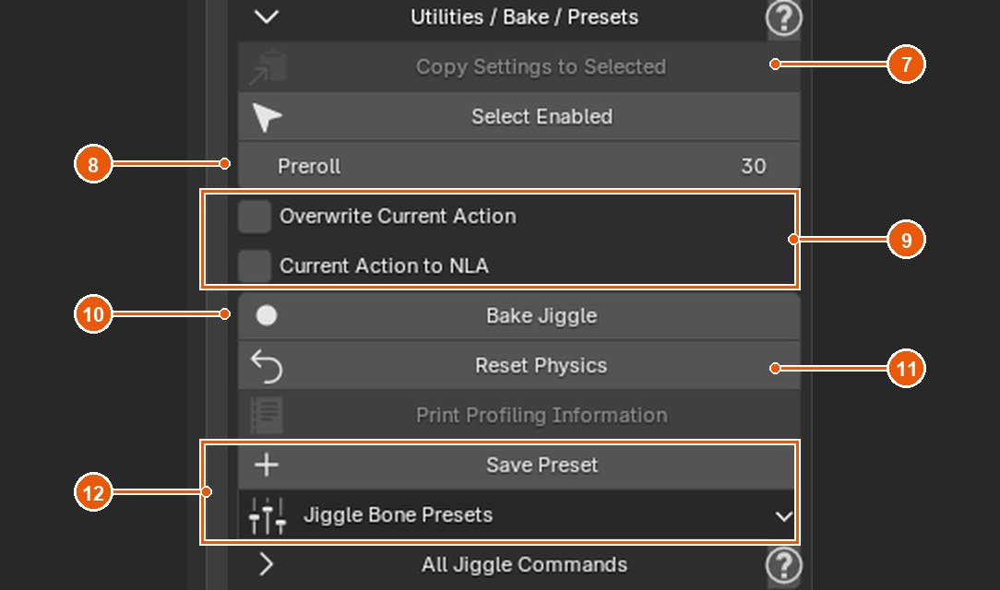
- 7Copy Settings to Selected: Copies the values of the active bone to the other selected bones
- 8Preroll: The number of frames calculated in advance before baking (30 at first). Baking starts from a shape settled by gravity
- 9Overwrite Current Action / Current Action to NLA: Whether to replace the current action with the baked one, or keep the original in the NLA and place the baked one on top
- 10Bake Jiggle: Bakes the jiggle you see in playback into keys on the bones with jiggle enabled. The keys of the parent bones remain too
- 11Reset Physics: Resets the jiggle calculation to match the pose at the current frame
- 12Save Preset / Jiggle Bone Presets: Saves the values under a name. Five built-in kinds are also provided: hair, tail, rope, stiff, and chest
- In "Always-on Toggles", set "Jiggle Callbacks" to "On", and in "Scene Settings" turn on "Enable Scene Jiggle" (off at first).
- Select the armature and turn on "Enable Armature Jiggle" in ②.
- In Pose Mode, select the bones to jiggle, enable ③, and set the values in ④ and ⑤. If unsure, apply a preset from ⑫.
- Play back to check, then bake with ⑩ "Bake Jiggle".
- To use the same values on many bones, select those bones together and copy with ⑦.
- ⑩ normally bakes into a new action that copies the original keys, so the original motion remains. You can also choose to overwrite or move to the NLA with ⑨.
- After baking, "Freeze" in ② is turned on and the jiggle calculation stops. During calculation you can stop with Esc or right-click, and stopping restores the original state.
Settings in detail: 5-18. Jiggle Physics, 5-20. Armature, 5-21. Active Bone, 5-22. Utilities / Bake / Presets
3. Getting Started
How to install the add-ons, how to change the interface language, and how the N panel and the "?" help buttons work in every add-on are covered in the "SmartTools Overall Specification". Please read chapters 2 to 5 there first.
| ZIP to install | SmartClothSuite_1.0.0.zip |
|---|---|
| Name shown in Blender | Smart Cloth |
| Supported Blender | 5.1.2 |
4. Where to Find It
All features are collected in the "Smart Cloth" panel inside the "Smart Cloth" tab of the Sidebar (N panel) on the right of the 3D Viewport. When Smart Tools Manager is installed, its settings decide which editors show the panel.
| Editors | 3D Viewport (3D Viewport), The same panel can also be shown in the Sidebar of the Image Editor, Node Editor, Graph Editor, Dope Sheet, NLA, Sequencer, Clip Editor, Text Editor, File Browser, and Spreadsheet. Whether it appears is decided by the Smart Tools Manager settings (it appears when Smart Tools Manager is not installed). |
|---|---|
| Tab | Smart Cloth |
| Mode | Mainly Object Mode. The bone operations of "Jiggle Physics" and "Cloth to Garment Bones" are used in Pose Mode (the mode for moving bones) with bones selected. |
- For installation, localization, how to open the N panel, and how to use the "?" help button, see the common chapter of the SmartTools Overall Specification.
- In the 3D Viewport, press N to show the Sidebar, then click "Smart Cloth" among the tabs on the right edge.
- Click the triangle to the left of a section header in the panel (such as "External Tool Integration"), or its name, to open its contents.
- Click the "?" to the right of a section header to show an explanation of that section.
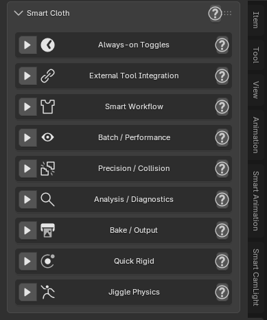
5. Features
Each heading is explained in order from the top of the panel. Click the "?" to the right of a heading to show the same explanation in Blender. The blue "Example" boxes show real operations on simple models such as Suzanne, with the 3D Viewport before and after.
5-1. Smart Cloth Panel (Order of Section Headers)
A single panel that contains all the features of SmartCloth Suite. The section headers appear from top to bottom in this order: "Always-on Toggles", "External Tool Integration", "Smart Workflow", "Batch / Performance", "Precision / Collision", "Analysis / Diagnostics", "Bake / Output", "Quick Rigid", "Jiggle Physics". All are closed at first.
Location3D Viewport > Sidebar > "Smart Cloth" tab
| Item | What it does |
|---|---|
| Section header triangle and section header name | Click to open or close the contents of that section header. Opening and closing only affects the display and does not change the scene. |
| ? | Shows an explanation of that section header in a small window. |
- Open only the section headers you want to use.
- If you are unsure, read the explanation with the "?" to the right of the section header.
5-2. Always-on Toggles
A place that gathers the on / off switches for features that keep running in the background. The Jiggle calculation stays stopped until you turn it on here.
LocationSmart Cloth panel > "Always-on Toggles"
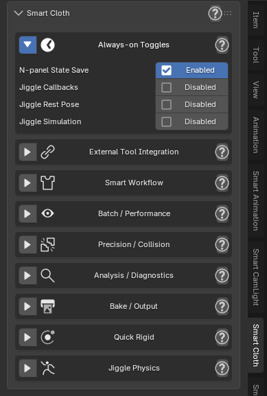
| Item | What it does |
|---|---|
| N-panel State Save | When on (on by default), settings you change in the panel are saved immediately to the settings file (Smart_Cloth_Suite.json inside Smart_Cloth_Suite in the Blender config). When off, they are saved only when you close or switch scenes, or when you save Preferences. |
| Jiggle Callbacks | Installs the mechanism that calculates jiggle as frames change, play, or render. Turn it on only while you check, render, or bake jiggle, and keep it off otherwise. |
| Jiggle Rest Pose | Draws markers in the 3D Viewport for the reference pose of the jiggle (the rest pose). |
| Jiggle Simulation | Draws markers in the 3D Viewport for the jiggle positions being calculated. |
| On / Off | The button on the right of each row. Each click switches between on and off. |
5-3. External Tool Integration
Shows whether Simply Cloth Studio is installed and usable, and is where you specify the body (the collision target).
LocationSmart Cloth panel > "External Tool Integration"
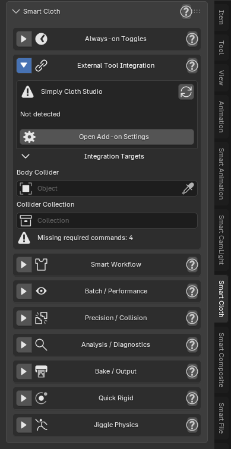
| Item | What it does |
|---|---|
| Simply Cloth Studio (the second line is the status: Available / Installed, Disabled / Required operations not detected / Not detected) | The status of Simply Cloth Studio. If "Ready", all the integrated buttons can be used. "Installed but disabled" means it is installed but not enabled. "Required commands missing" means it is enabled but the needed operations cannot be found. "Not detected" means it is not installed. |
| Refresh Status (icon with a circular arrow) | Rechecks the status display. Click it after installing or enabling Simply Cloth Studio. |
| External Version: | Appears when the version of the Simply Cloth Studio that was found is known. |
| Open Add-on Settings | Opens Blender Preferences. Use it to install or enable Simply Cloth Studio. |
| Apply Colliders | Appears only when "Available". Applies the Simply Cloth Studio collision settings to the objects in "Body Collider" and "Collider Collection". Objects that already have Collision are left as they are. Object names and the selection are restored. |
| Integration Targets (collapsed) > Body Collider | The body mesh that serves as the collision target. It is also used for analysis, collision adjustment, and layered-garment spacing. |
| Integration Targets > Collider Collection | A collection of meshes, other than the body, that you want to collide with (optional). |
| Integration Targets > Required Operations Display | If all the required operations are present, "All required commands are available." appears. If some are missing, "Missing required commands: N" appears with the number missing. |
- Check that the status is "Ready". If not, click "Open Add-on Settings", enable Simply Cloth Studio, and click "Refresh Status".
- Open "Integration Targets" and specify the body mesh in "Body Collider".
5-4. Smart Workflow
A place that performs Simply Cloth Studio cloth creation and the additional SmartCloth Suite settings on the selected clothing in one step. It can be undone with a single Undo.
LocationSmart Cloth panel > "Smart Workflow"
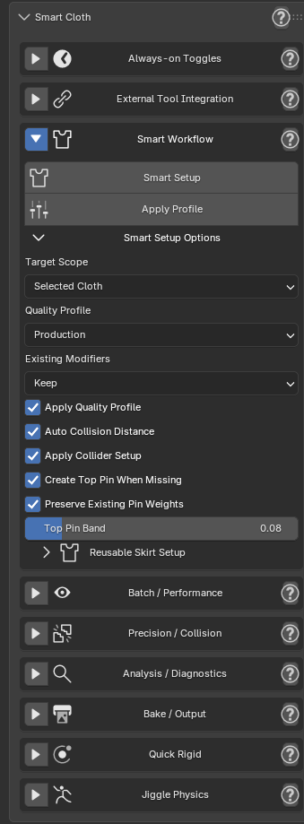
| Item | What it does |
|---|---|
| Smart Setup | Creates Simply Cloth Studio cloth on the target clothing, then sets quality, collision distance, top pin, and collider settings. Clothing that already has cloth is not recreated; only the additional settings are applied. |
| Apply Profile | Applies only the selected quality profile (values for calculation detail, collision, time speed, and self collision) to the target cloth. It does not replace the Simply Cloth Studio fabric material settings. |
| Smart Setup Settings (collapsed) > Target Scope | Choose from "Active Cloth", "Selected Cloth", and "All Cloth in Scene". |
| Smart Setup Settings > Quality Profile | Choose from "Preview", "Balanced", "Production", and "Hero". Later ones are finer and heavier. |
| Smart Setup Settings > Existing Modifiers | When creating cloth, choose whether to "Keep", "Apply", or "Remove" the modifiers that the clothing already has. |
| Apply Quality Profile / Auto Collision Distance / Apply Collider Setup | Processes that "Smart Setup" performs in sequence. Only the checked ones are performed. |
| Create Top Pin When Missing | Creates a pin (a vertex group that fixes the fabric) on the top band of the clothing. |
| Preserve Existing Pin Weights / Top Pin Band | Appears when the item above is on. When "Preserve Existing Pin Weights" is on, clothing that already has pin weights is left as it is. "Top Pin Band" is the fraction of the clothing height, measured from the top, that becomes the pin. |
- Select the clothing mesh.
- In "Smart Setup Options", choose the target scope, quality profile, and existing modifiers.
- Click "Smart Setup".
5-5. Reusable Skirt Setup
A place to prepare clothing such as a skirt so it can be switched between a bone-driven state and a cloth-driven state. Object and bone names are not hard-coded; you assign them here. The assignments can be saved on the clothing and reused later. It is inside "Smart Workflow" and is open from the start.
LocationSmart Cloth panel > "Smart Workflow" > "Reusable Skirt Setup"
| Item | What it does |
|---|---|
| Garment Mesh / Armature | Specify the clothing mesh to set up and the armature (a set of bones) that drives it. |
| Skirt Bone Names (comma-separated) / Leg Bone Names (comma-separated) | Write the names of the bones that drive the skirt and the leg bones, separated by ",". |
| Collider Collection | A collection of the body and leg meshes that the cloth collides with. |
| Outside Offset | The distance used when "Outside Correction" pushes the clothing out from the body. |
| Cloth Setup Route | "Smart Cloth" prepares the setup with Blender's standard cloth (Simply Cloth Studio is not needed). "Simply Cloth Studio" calls Simply Cloth Studio cloth creation. |
| Preview Mapping | Checks the assignments of clothing, armature, bones, and collision targets without changing anything. |
| Apply Setup | Checks the assignments and prepares the cloth. At first it is in the bone-driven state. |
| Configuration Consistency | Checks only whether the assignments and the modifier settings match. It does not check that the clothing is not sinking into the body. |
| Save Mapping | Saves the assignments on the clothing. They remain even after you save the file and reopen it. |
| Outside Correction | Adds or removes a correction that pushes the clothing outside the body (Shrinkwrap) on the clothing only. Some sinking may remain. |
| Bones / Cloth | Switches whether the clothing is driven by bones or by cloth. Skin weights are not changed. The button for the current state is shown as pressed. |
| Move Cloth to Simply | Replaces the current cloth on the clothing with Simply Cloth Studio cloth. Values, pins, collision targets, and the switch are carried over, and the original cloth is recorded. Simply Cloth Studio is required. |
| Restore Original Cloth | Cancels the replacement and recreates the recorded original cloth. It can be pressed only for clothing that was replaced. |
| Bake and Check Intersections | Bakes the clothing's cloth and reports the maximum number of vertices that went inside the body, the height of the lowest point, and so on. The bake is kept, and the drive mode and frame are restored. |
- Enter the costume mesh, armature, skirt bone names, leg bone names, and collision target collection.
- Choose the "Cloth Setup Route".
- Click "Preview Mapping", then "Apply Setup", then "Configuration Consistency", in that order.
- If there are no problems, click "Save Mapping".
- Switch the drive mode with "Bones" and "Cloth".
ExampleSwitch the Skirt Between Bones and Cloth(demonstrated on a tube-shaped Skirt and bones)
Once you make the Skirt switchable with "Apply Setup", a single button lets you go back and forth between a state where it moves as the bones do and a state where it lags behind as cloth. Skin weights do not change.
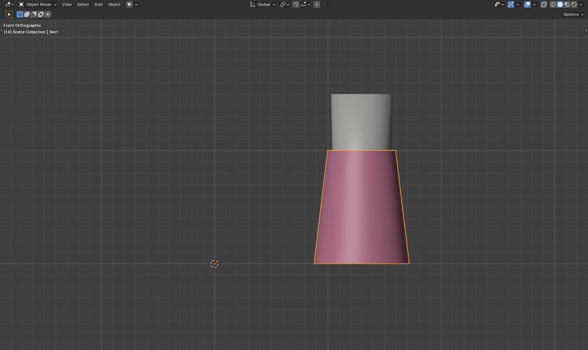
- Fill in "Garment Mesh", "Armature", "Skirt Bone Names" (comma-separated), "Leg Bone Names" (comma-separated), and "Collider Collection".
- Set "Cloth Setup Route" to "Smart Cloth", and click "Apply Setup". It starts in the "Bones" state.
- Click "Cloth", and play back from the first frame.
- Click "Bones" to return to the original state.
What to look for: This compares frame 16, where the Body is moving to the right. With "Bones", the Skirt follows the bones, keeping its shape, and moves together with the Body. With "Cloth", only the waist follows along, and the hem lags to the left as cloth.
5-6. Fabric Component / Retained Bands and Decorations
A place for turning only the fabric part of the clothing into cloth while bands and ornaments keep moving with bones. Helper objects for the fabric and the ornaments are created from the original clothing and used. It is inside "Reusable Skirt Setup".
Location"Reusable Skirt Setup" > "Fabric / Retained Trim"
| Item | What it does |
|---|---|
| Fabric Selection | Decide whether to select the fabric part by "Material Slot" or by "Vertex Group". |
| Fabric Material Slot / Fabric Vertex Group / Selection Weight | The material slot number that defines the fabric part (counted from 0), or a vertex group and its weight threshold. The fields shown change with the selection method. |
| Support Armature / Support Bone | Specify the existing armature and bone that support the fixed area of the fabric. No constraint is added to the bone. |
| Pin Vertex Group / Pin Height Fraction | The vertex group that fixes the fabric. When empty, it is decided by what fraction of the height, from the top of the fabric, to fix. |
| Simulated Fabric Mass (kg) / Fabric Tension / Fabric Bending | The weight of the whole fabric, and how hard it is to stretch and to bend. |
| Preview Fabric Component | Counts the faces of the fabric and of the ornaments to keep, without changing anything. |
| Create Cloth Simulation | Creates the fabric and ornament helper objects, and creates Simply Cloth Studio cloth on the fabric only. |
| Configuration Consistency | Checks only whether the helper objects, materials, UVs, switch state, pins, and weight settings match. |
| Bones / Cloth | Switches between the look of the original clothing and the fabric-only cloth plus ornaments. |
| Remove Cloth Simulation | Returns to the bone display and deletes only the helper objects created by this setup. |
5-7. Cloth to Garment Bones
A place that reads the motion of baked cloth and transfers it as motion of the costume bones. The original animation is kept, and only the selected bones are overwritten with the baked motion. It is inside "Fabric / Retained Trim".
Location"Fabric / Retained Trim" > "Cloth to Garment Bones"
| Item | What it does |
|---|---|
| Baked Cloth Mesh | The mesh that has the baked cloth. |
| Target Armature | The armature that has the costume bones. |
| First Frame / Last Frame | The range of frames to read. Set it within the range of the baked cloth. |
| Preview | Checks the correspondence between the selected bone chains and the cloth, without creating a result. |
| Bake to Bones | Reads the whole range of the baked cloth, then creates the bone motion. |
| Standard / Cloth Baked | Switches between the original motion and the baked motion. |
| Clear Bone Bake | Deletes only the bake created by this add-on. The original animation remains. |
- In Pose Mode, select the chain of costume bones you want to transfer (the root is fixed).
- Enter the baked cloth mesh, the target armature, and the frame range.
- Click "Preview", then click "Bake to Bones".
5-8. Batch / Performance
A place for applying a quality profile to multiple cloths at once, or switching to a light display only while you work. The original values are recorded before lightening, so they can be restored.
LocationSmart Cloth panel > "Batch / Performance"
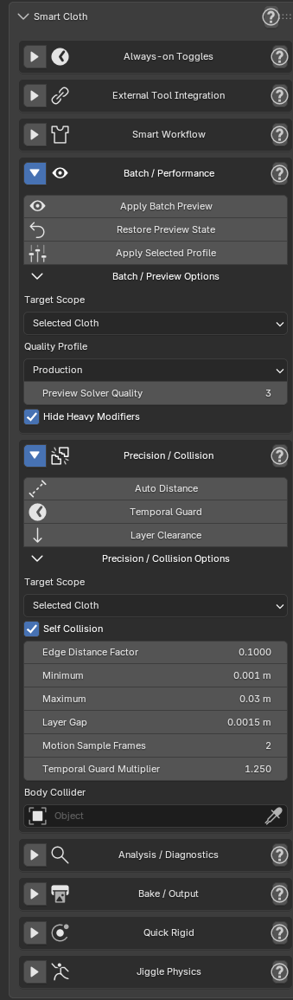
| Item | What it does |
|---|---|
| Apply Batch Preview | Lowers cloth quality to the "Preview Solver Quality", lowers collision quality, turns off self collision, and hides heavy modifiers to lighten the screen. |
| Restore Preview State | Restores the recorded quality, collision, and modifier visibility. |
| Apply Selected Profile | Applies the selected quality profile to the cloth in the target scope. |
| Batch / Preview Settings (collapsed) > Target Scope / Quality Profile | Choose which cloth gets which quality. |
| Preview Solver Quality | The cloth quality values used only while lightening is active. |
| Hide Heavy Modifiers | When on, temporarily hides Subdivision, Multires, Geometry Nodes, Solidify, and smoothing modifiers on screen. |
- When things are heavy, such as while posing, click "Apply Batch Preview".
- Before the final check or baking, click "Restore Preview State".
ExampleTemporarily Hide Heavy Subdivision to Lighten the Viewport While You Work(demonstrated on the Cloth object with a Subdivision modifier)
Clicking "Apply Batch Preview" lowers the quality of the cloth calculation and hides heavy modifiers such as Subdivision on screen to lighten the load. The original state is recorded, and you can return to it with "Restore Preview State".
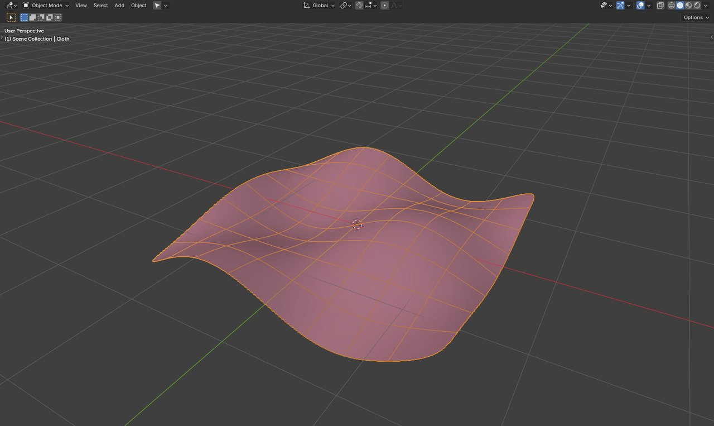
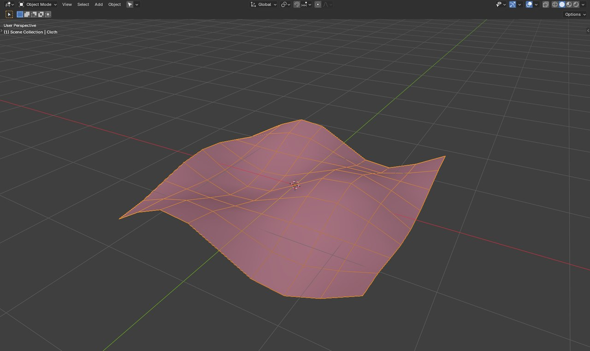

- Select the Cloth object, which has Subdivision (level 3) and cloth applied.
- Click "Apply Batch Preview" in "Batch / Performance".
- When you finish working, click "Restore Preview State" in the same place.
What to look for: The Cloth object, which was smooth from subdivision, returns to its original coarse shape after applying, and its edges and faces look angular. After restoring, it returns to its smooth shape.
5-9. Precision / Collision
A place that sets collision distances to match mesh density, and adds margin to match the speed of motion or layered garments. Each one acts only when you click its button.
LocationSmart Cloth panel > "Precision / Collision"
| Item | What it does |
|---|---|
| Auto Distance | Calculates the collision and self-collision distances from the average edge length of the mesh and enters them. Click it after changing the shape or size. |
| Temporal Guard | Looks ahead from the current frame by the "Motion Sample Frames" and adds collision margin for fast motion. After looking ahead, it returns to the original frame. |
| Layer Gap | Orders layered garments from closest to the body outward, and adds collision distance for each garment farther out. |
| Precision / Collision Settings (collapsed) > Target Scope | Choose which cloth to apply it to. |
| Self Collision | Whether the fabric calculates collisions with itself. |
| Edge Distance Factor | The multiplier applied to the average edge length to get the collision distance. |
| Minimum / Maximum | The lower and upper limits of the automatically calculated collision distance. |
| Layer Gap (field) | The distance added for each outer garment. |
| Motion Sample Frames / Temporal Guard Multiplier | The number of frames the temporal guard looks ahead, and the multiplier applied to the amount of motion found. |
| Body Collider | The body mesh. It is the same setting as in "External Tool Integration". |
- Set "Minimum", "Maximum", and "Edge Distance Factor".
- Click "Auto Distance".
- When there is fast motion, click "Temporal Guard" at the frame where the motion starts.
- For layered garments, enter the "Body Collider" and click "Layer Gap".
5-10. Analysis / Diagnostics
A place that creates vertex groups that make cloth problems easier to find, and runs settings inspection (preflight). It can also make conservative topology (mesh connectivity) repairs.
LocationSmart Cloth panel > "Analysis / Diagnostics"
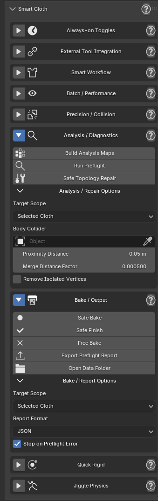
| Item | What it does |
|---|---|
| Build Analysis Maps | Without changing the mesh shape, creates vertex groups that show sharply bent areas, pin candidates, and proximity to the body. |
| Run Preflight | Inspects the cloth modifier, mesh, deformation, pins, cache, and quality, and writes a detailed report. |
| Safe Topology Repair | Merges only vertices at almost the same position, removes isolated vertices if needed, and fixes normals (face directions). Meshes with shape keys are skipped. |
| Analysis / Repair Settings (collapsed) > Target Scope / Body Collider | The objects to inspect, and the body mesh. |
| Proximity Analysis Distance | The distance at which the weight becomes 0 in the body proximity vertex group. The closer to the body, the larger the weight. |
| Merge Distance Factor | The very small multiplier applied to the average edge length when merging vertices at almost the same position. |
| Remove Isolated Vertices | When on, deletes only vertices that are not connected to any edge. |
- Enter the "Body Collider" and the "Proximity Analysis Distance".
- Click "Build Analysis Maps" and look at the vertex groups that were created.
- Click "Run Preflight", check the report, then use "Safe Topology Repair" if needed.
ExampleShow Pin Candidates on the Skirt Tube in Color(demonstrated on a tube open at the top and bottom, used as the Skirt)
Clicking "Build Analysis Maps" examines the shape of the fabric and turns pin candidates along the top edge and strongly curved areas into vertex groups (weight colors). You can use them as a rough draft before painting the pin vertex group by hand.
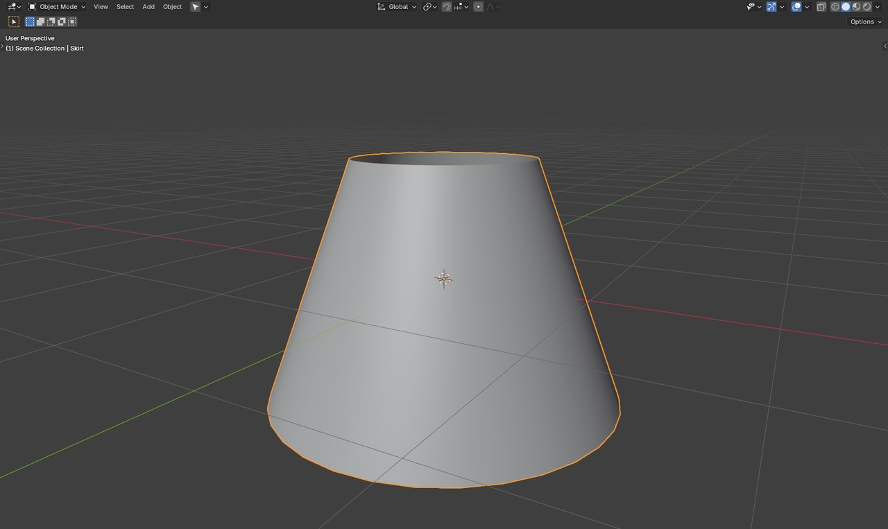
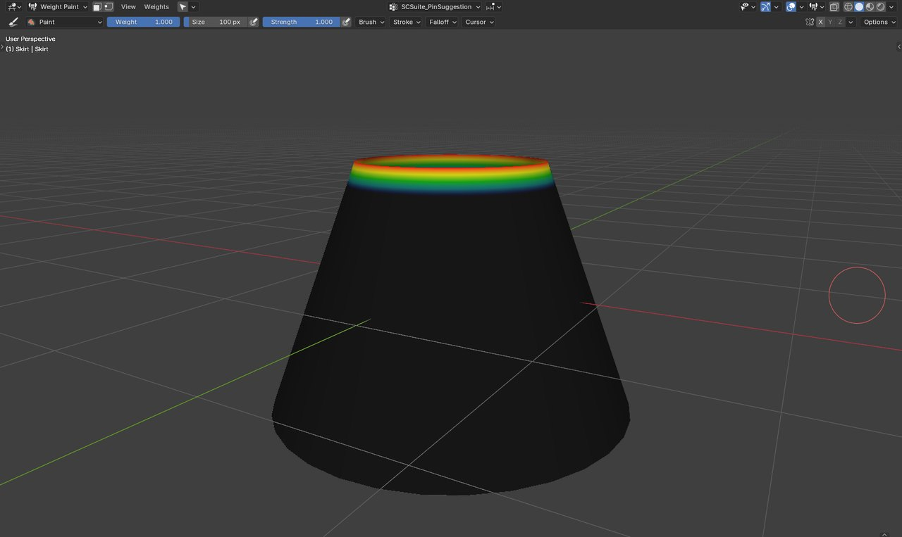
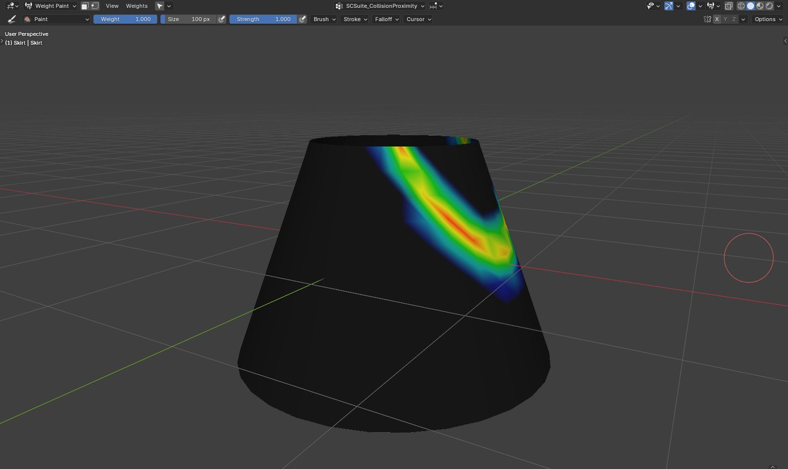
- Select the Skirt mesh, and set the Body mesh in "Body Collider" under "Analysis / Repair Options".
- Click "Build Analysis Maps" in "Analysis / Diagnostics".
- Switch to Weight Paint Mode, select the vertex group "SCSuite_PinSuggestion" or "SCSuite_CollisionProximity", and look at the colors.
What to look for: The redder an area, the higher its weight. In "SCSuite_PinSuggestion", the band along the top edge of the tube turns red, showing the candidates for pins (the parts to fix in place). In "SCSuite_CollisionProximity", a colored band appears where the tube is close to the Body inside (hidden in the image). The shape does not change.
ExampleReconnect Separated Faces to Restore Smooth Shading(demonstrated on Suzanne with all faces separated)
In imported clothing and similar meshes, vertices can overlap at the same position, leaving faces unconnected. "Safe Topology Repair" merges only vertices at nearly the same position and reconnects the faces.
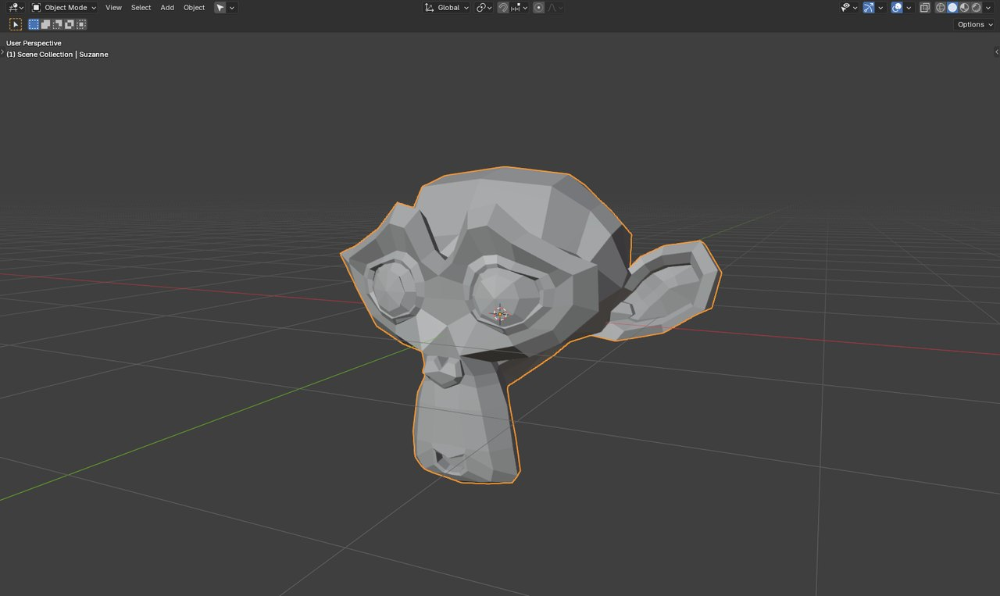
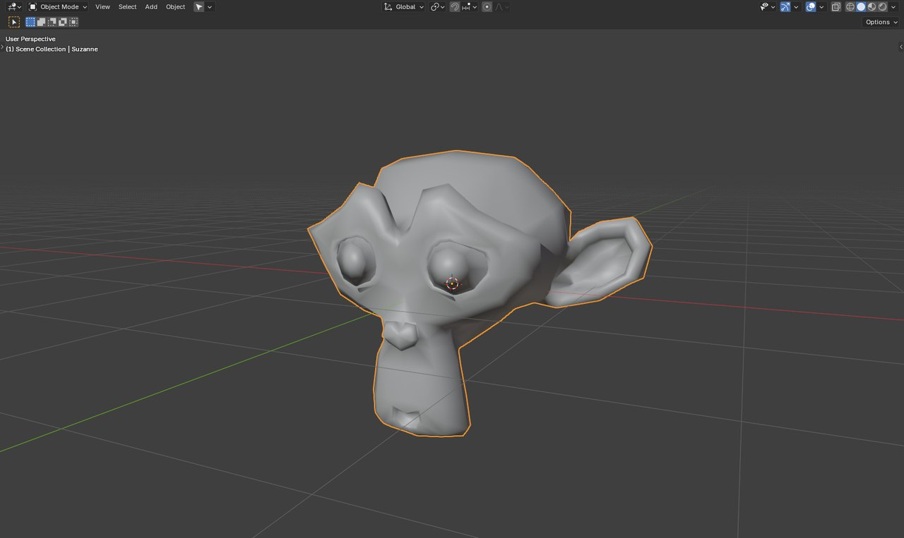
- Select the mesh whose faces are not connected.
- Click "Safe Topology Repair" in "Analysis / Diagnostics".
What to look for: Before, the shading breaks at every face boundary, so the mesh looks angular. After, the vertices are merged and the faces are connected, giving smooth shading. The shape itself does not move.
5-11. Bake / Output
A place that runs the inspection (preflight) and then bakes the cloth (calculating and recording the motion) or runs the Simply Cloth Studio finishing step. It also saves the inspection report.
LocationSmart Cloth panel > "Bake / Output"
| Item | What it does |
|---|---|
| Safe Bake | Inspects the target, then bakes each not-yet-baked cloth one at a time. If you stop it with Esc or right-click, it stops at the break where one cloth's calculation finishes, and restores the original state. |
| Safe Finish | Commits the shape visible at the current frame to the mesh. Even if you move the collider after baking, the shape that was visible is committed. Unbaked cloth is baked first. Modifiers before Cloth are included in the shape and removed. The name of the Cloth modifier does not matter. |
| Free Bake | Deletes the record (point cache) of the target cloth. If you jump to a frame in the middle after deleting it, calculation is skipped and the shape breaks. Click "Safe Bake" again to record it again. |
| Export Preflight Report | Runs the inspection and writes out the report. |
| Open Data Folder | Opens the folder that holds the settings file and reports (Smart_Cloth_Suite inside the Blender config). |
| Bake / Report Settings (collapsed) > Target Scope | The range of objects to bake. |
| Report Format | Choose whether the inspection report is written as JSON (machine-readable) or text (human-readable). It is JSON at first. |
| Stop on Preflight Error | When on (on by default), baking and finishing stop if the inspection finds an error. |
| Last Report: | Shows the location of the report written most recently. |
- Choose the "Target Scope" and the "Report Format".
- Check that "Stop on Preflight Error" is on.
- Click "Safe Bake".
ExampleInspect First, Then Bake the Cloth Motion(demonstrated on the Cloth object and the Sphere)
"Safe Bake" inspects the target cloth before baking. If the inspection finds no errors, the motion of the Cloth object is recorded, and the same shape appears even when you jump to any frame.
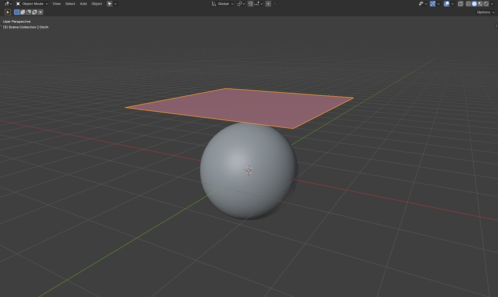
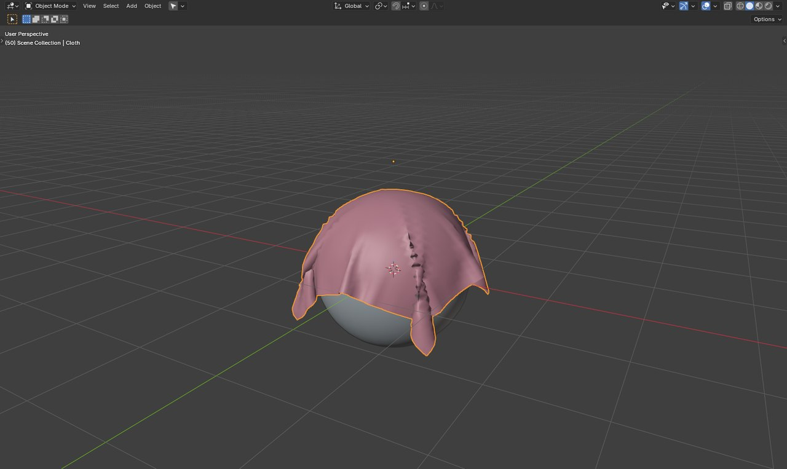
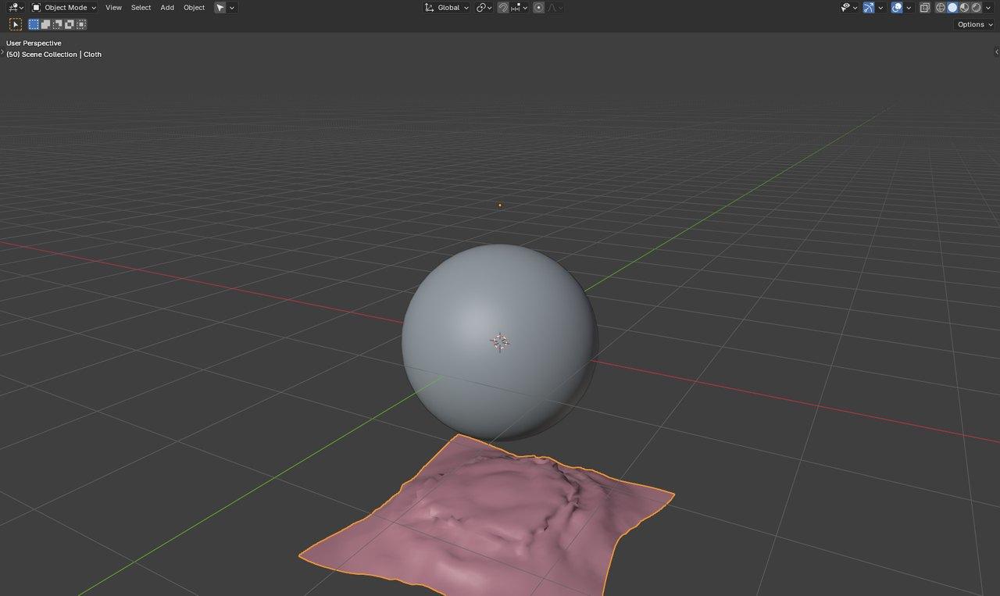

- Select the Cloth object, which has cloth applied.
- Click "Safe Bake" in "Bake / Output".
- Jump to a later frame in the Timeline.
- To start over, click "Free Bake". To record again, click "Safe Bake".
What to look for: Before baking, the Cloth object is flat. After baking, just jumping to a later frame immediately shows it draped over the Sphere. If you clear the recording with "Free Bake" and then jump to the same frame, the calculation for the frames in between is skipped, so the Cloth object passes through the Sphere and falls below it. Click "Safe Bake" again, and it returns to the shape draped over the Sphere.
5-12. Quick Rigid
A place to quickly attach and adjust Blender rigid bodies (solid objects that fall, roll, and collide under physics).
LocationSmart Cloth panel > "Quick Rigid"
| Item | What it does |
|---|---|
| Quick Menu | A set of buttons that open the Quick Rigid menus. |
| Rigid Body Setup | A set of buttons for attaching and removing rigid bodies. |
| Active Rigid Body | Appears only when the selected object has a rigid body. You can change the values directly. |
| Presets / Bake | Handles saving values and recording the rigid body calculation. |
| All Quick Rigid Commands | Operations that are not in any other section header. |
- Select one or more meshes.
- In "Rigid Body Setup", click "Add Active" or "Add Passive".
- Adjust the values in "Active Rigid Body", and bake with "Presets / Bake".
5-13. Quick Menu
A place that calls up the Quick Rigid menus.
Location"Quick Rigid" > "Quick Menu"
| Item | What it does |
|---|---|
| Open Quick Rigid Menu | Opens the main Quick Rigid menu. |
| Main Settings / Physical Properties / Simulation Settings / Presets / Bake Options | Opens the menu that collects each group of settings. |
5-14. Rigid Body Setup
A place to attach rigid bodies to, and remove them from, the selected meshes.
Location"Quick Rigid" > "Rigid Body Setup"
| Item | What it does |
|---|---|
| Add Active | Attaches a rigid body that moves by force or collision (Active) to all the selected meshes. |
| Add Passive | Attaches a rigid body (Passive) that does not move by itself and serves as something to collide with to all the selected meshes. Use it for floors and the like. |
| Copy Settings | Copies the rigid body settings of the active object to the other selected objects. |
| Remove Rigid Body | Removes the rigid body from the active object (the last one selected). |
ExampleAdd Rigid Bodies to Blocks and Drop Them onto the Floor(demonstrated on the Floor and three cubes)
Just select the cubes and click "Add Active", then select the Floor and click "Add Passive", and they become rigid bodies that fall and collide under physics. On playback, the upper cubes fall and hit the cubes below and the Floor.
- Select the three cubes, and click "Add Active" in "Quick Rigid" > "Rigid Body Setup".
- Select the Floor, and click "Add Passive".
- Play back and advance the frames.
What to look for: At frame 1, all three cubes float in the air. On playback, they all fall: the red cube lands on the Floor, the green cube lands on top of the red one, and the blue cube is knocked away and falls to the Floor. The Floor (passive) does not move and serves as the object they collide with.
5-15. Active Rigid Body
A place to change the rigid body values of the selected object directly. It appears only when the selected object has a rigid body.
Location"Quick Rigid" > "Active Rigid Body"
| Item | What it does |
|---|---|
| Type / Shape | Choose "Active" (moves) or "Passive" (a fixed thing to collide with), and the shape used for collision ("Convex Hull", box, sphere, and so on). |
| Animated | When on, the rigid body is moved by keyframed motion. |
| Mass / Friction / Bounciness | Weight, resistance to sliding, and strength of bounce. |
| Linear Damping / Angular Damping | How quickly the momentum of movement and rotation fades. |
5-16. Presets / Bake
A place to save rigid body values as presets (saved settings) and to record the physics calculation.
Location"Quick Rigid" > "Presets / Bake"
| Item | What it does |
|---|---|
| Add Preset | Saves the rigid body values of the selected object under a name (can be clicked while an object with a rigid body is selected). If you save with the name empty, "Enter a preset name." appears and nothing is saved. |
| Apply Preset | Click to show the list of saved presets. Choosing one applies its values to the selected object. When nothing is saved, "No presets available" appears. You can also choose from "Presets" in the "Quick Menu". |
| Delete Preset | Click to show the list of saved presets. Choosing one deletes that preset. When nothing is saved, "No presets available" appears. |
| Bake All Dynamics | Records all the physics calculations in the scene. |
| Free All Bakes | Deletes all the recorded physics calculations. |
ExampleSave a Bouncy Setup as a Preset and Apply It to Another Box(demonstrated on the Floor and two cubes)
If you save rigid body values under a name, you can apply the same values to another object. Here, you save the values of the Blue Box, which bounces well, and apply them to the Red Box.
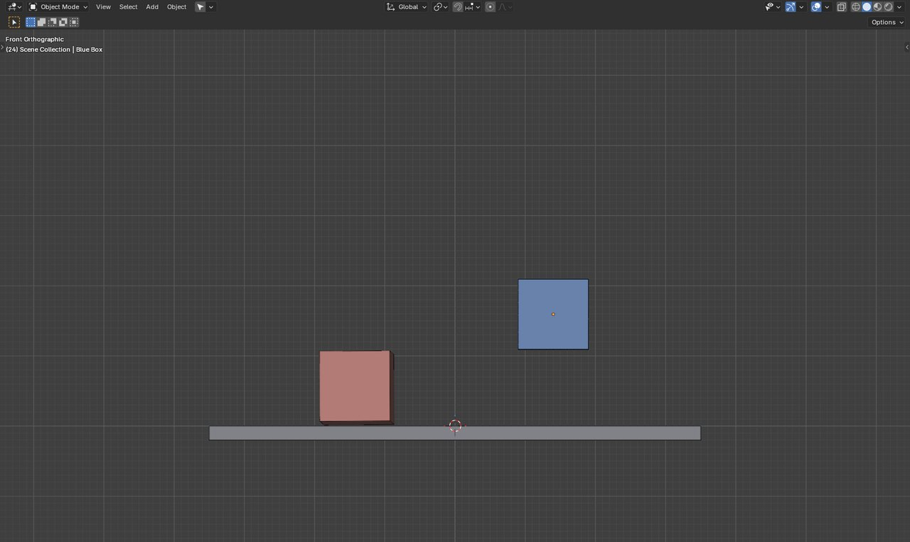
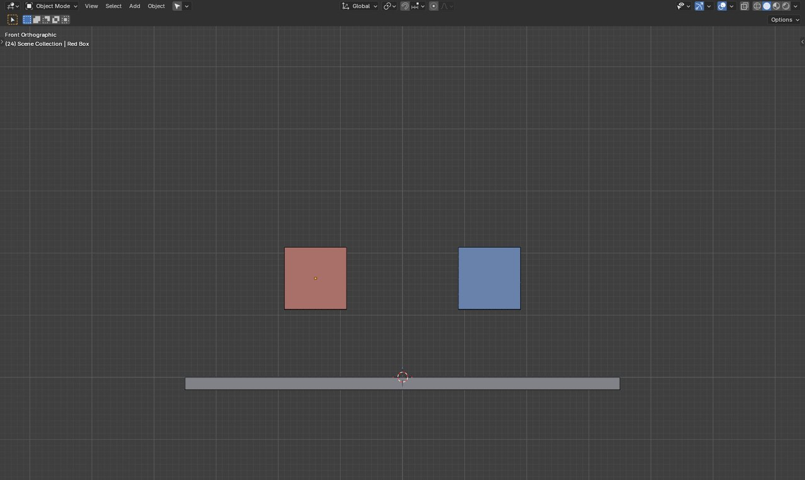
- Select the Floor, and set "Bounciness" in "Active Rigid Body" to 0.9. How an object bounces depends on the bounciness of both colliding objects, so the boxes will not bounce while the Floor stays at 0.
- Select the Blue Box, and set "Bounciness" in "Active Rigid Body" to 0.9. Leave "Bounciness" of the Red Box at 0.
- Click "Add Preset" in "Presets / Bake", name it "Bouncy Box", and save it.
- Select the Red Box, click "Apply Preset", and choose "Bouncy Box" from the list that appears.
- Play back from the first frame.
- When you no longer need it, click "Delete Preset" and choose it from the list to delete it.
What to look for: Before applying, only the Blue Box bounces high, and the Red Box stays close to the Floor. After applying, the Red Box also bounces as high as the Blue Box.
5-17. All Quick Rigid Commands
Quick Rigid operations that are not in any other section header.
Location"Quick Rigid" > "All Quick Rigid Commands"
| Item | What it does |
|---|---|
| Toggle Animated | Switches "Animated" on and off for the active rigid body. When on, it no longer falls under physics and moves as keyed. Click again to return to the physics-driven state. |
| Copy Shortcut Setup | Copies to the clipboard the information you register yourself in the "Keymap" section of Preferences, so that the Quick Rigid menu can be opened with a shortcut. The keymap itself is not changed. |
ExampleKeep Just One Box from Falling Under Physics(demonstrated on the Floor and two boxes)
Clicking "Toggle Animated" stops the selected rigid bodies from falling under physics and makes them objects that move as keyed. Here, only the Green Box is switched.
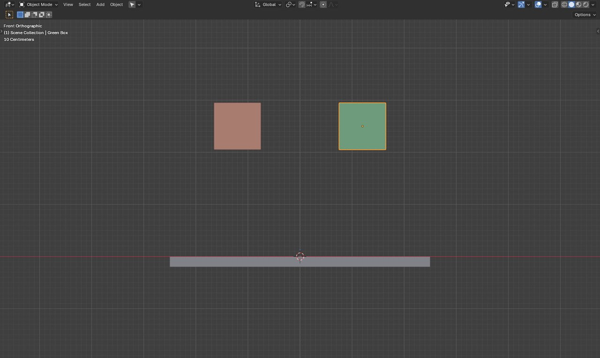
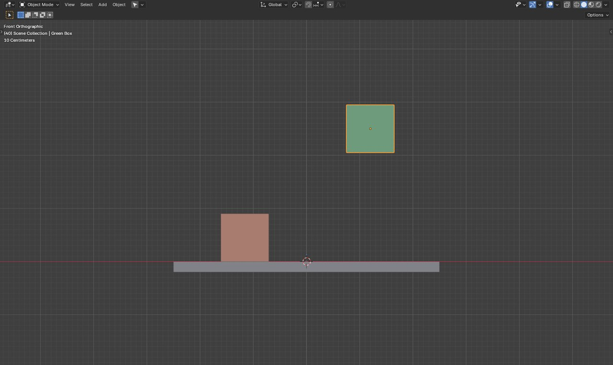
- Click "Add Active" for the two boxes, and "Add Passive" for the Floor.
- Select the Green Box, and click "Toggle Animated" in "All Quick Rigid Commands".
- Play back from the first frame.
What to look for: Both boxes are active rigid bodies, but on playback only the Red Box falls to the Floor, and the Green Box stays in the air. Click "Toggle Animated" again, and the Green Box falls too.
5-18. Jiggle Physics
A place that adds secondary jiggle (motion that sways with a delay after the movement) to bones. Set it up in the order scene, armature, bone.
LocationSmart Cloth panel > "Jiggle Physics"
| Item | What it does |
|---|---|
| Scene Settings | Jiggle and wind settings for the whole scene. |
| Armature | Turns jiggle on and off for the selected armature. |
| Active Bone | The jiggle values of the selected bone. |
| Utilities / Bake / Presets | Helper buttons for copying, selecting, baking, presets, and more. |
| All Jiggle Commands | Operations that are not in any other section header. |
- In "Always-on Toggles", set "Jiggle Callbacks" to "On".
- In "Scene Settings", turn on "Enable Scene Jiggle".
- Select the armature and enter Pose Mode.
- Enable jiggle on the armature, then on the bones, and adjust the values.
- Play back to check the motion, and record it with "Bake Jiggle".
5-19. Scene Settings
A place to set the jiggle calculation for the whole scene and the wind.
Location"Jiggle Physics" > "Scene Settings"
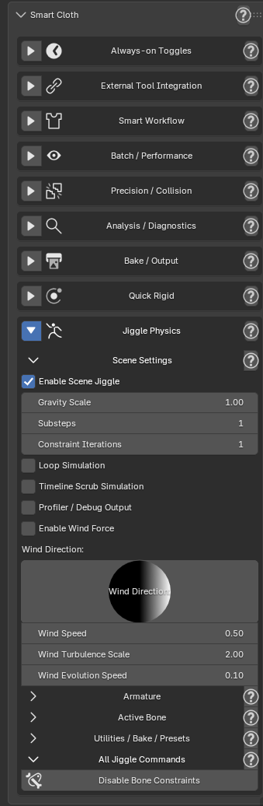
| Item | What it does |
|---|---|
| Enable Scene Jiggle | Turns the scene's jiggle calculation on and off. It is off at first. |
| Gravity Scale | The multiplier applied to the scene's gravity. At 1.0, the scene's gravity is used as it is. |
| Substeps / Constraint Iterations | How many times one frame is split for calculation, and how many times the bone connections are adjusted. The higher the values, the more stable and the heavier. |
| Loop Simulation | Keeps calculating jiggle even when the timeline loops. While on, the calculation state is not reset when playback returns to the first frame. |
| Simulate While Scrubbing | Calculates even while you drag the timeline. |
| Profiler / Debug Output | Turns on features for examining calculation time and the like. |
| Enable Wind Force / Wind Direction / Wind Speed / Wind Turbulence Scale / Wind Evolution Speed | Decide whether wind blows, and its direction, strength, and fluctuation. |
5-20. Armature
A place to switch jiggle for the selected armature.
Location"Jiggle Physics" > "Armature"
| Item | What it does |
|---|---|
| Armature Name | When an armature is selected, the following three buttons appear below the row with its name. |
| Enable Armature Jiggle | Turns on jiggle for this armature. |
| Mute | Temporarily turns off jiggle for this armature. |
| Freeze | Stops the jiggle calculation. This is the state to use after baking. |
5-21. Active Bone
A place to set the jiggle values of the bone selected in Pose Mode.
Location"Jiggle Physics" > "Active Bone"
| Item | What it does |
|---|---|
| Enable Bone Jiggle | Makes this bone jiggle. |
| Angle Elasticity / Length Elasticity / Root Elasticity | The strength of the pull back toward the original direction, the original length, and the root bone. The larger the value, the stiffer. |
| Gravity / Blend / Air Drag / Friction | The multiplier applied to the scene's gravity, how much jiggle is mixed in (0 is no jiggle, 1 is all of it), the loss of momentum due to air, and how quickly the bone returns to its original pose. |
| Collision Radius | The thickness of the bone when checking for collisions. |
| Clear Parameter Keyframes | Deletes only the keyframes on the jiggle values of the selected bone. The jiggle settings remain. It can be clicked when "Enable Scene Jiggle" is on, you are in Pose Mode, and the armature has an action. |
| Disconnect Selected Bones | Connected bones cannot use length stretching (Length Elasticity), so this disconnects the selected bones. |
ExampleThe Hair Strand Lags and Sways When the Head Moves(demonstrated on the Suzanne Head and the Hair Strand)
When you add jiggle to bones, bones without keys sway with a lag behind their parent's motion. Here, only the Head has keys, and the bones of the Hair Strand have none.
- Set "Jiggle Callbacks" in "Always-on Toggles" to "On".
- Turn on "Enable Scene Jiggle" in "Jiggle Physics" > "Scene Settings".
- Select the armature, and click "Enable Armature Jiggle" in "Armature".
- In Pose Mode, select all four strand bones, and make the top one active.
- Click "Enable Bone Jiggle" in "Active Bone", and set "Gravity" to 0.5, "Root Elasticity" to 0.95, "Length Elasticity" to 0.95, "Angle Elasticity" to 0.7, and "Air Drag" to 0.2.
- Click "Copy Settings to Selected" in "Utilities / Bake / Presets" to give the other three bones the same values.
- Play back from the first frame.
What to look for: At rest, the Hair Strand hangs straight down. While the Head moves to the right, the tip of the Hair Strand trails behind to the left. Even after the Head stops, the Hair Strand does not return right away, and gradually comes back down.
5-22. Utilities / Bake / Presets
A place for copying jiggle settings, baking, and presets. Use it in Pose Mode.
Location"Jiggle Physics" > "Utilities / Bake / Presets"
| Item | What it does |
|---|---|
| Copy Settings to Selected | Copies the jiggle settings of the active bone to the other selected bones. It can be clicked when jiggle is enabled on the active bone and two or more bones are selected. |
| Select Enabled | Selects the bones that have jiggle enabled. |
| Preroll | The number of frames calculated in advance at the first frame before baking. It is 30 at first, so baking starts from a settled shape that has dropped under gravity. At 0, baking starts from the same shape as when you play back. |
| Overwrite Current Action | When on, no new action is created, and the current action is replaced with the baked one. The name stays the same and the original keys are replaced by the baked keys (undoable with Ctrl+Z). While on, "Current Action to NLA" cannot be used. The setting remains only in the current scene and is not carried over to new scenes. |
| Current Action to NLA | When on, the original action is kept as an NLA strip, and the new baked action is placed on top of it. The setting remains only in the current scene and is not carried over to new scenes. |
| Bake Jiggle | Calculates the playback range and turns the motion you see in playback, including jiggle that lags behind the parent bones, into keys on the bones with jiggle enabled. Normally it bakes into a new action that copies the original keys, so the keys of the moving parent bones remain too. It can be clicked in Pose Mode when armature jiggle is enabled and not muted. After baking, "Freeze" in "Armature" is turned on. During calculation you can stop with Esc or right-click, and stopping restores the original state. |
| Reset Physics | Resets the jiggle calculation state to match the pose at the current frame. Bones and items without keys return to their values from before jiggle moved them. When "Loop Simulation" is off, the same thing happens automatically when playback returns to the first frame, so click this when you want to retry from a frame in the middle. |
| Print Profiling Information | Outputs measurement results such as calculation time. It can be clicked when "Enable Scene Jiggle" and "Profiler / Debug Output" in "Scene Settings" are on. |
| Save Preset | Saves the jiggle settings of the active bone as a preset under a name. It can be clicked when "Enable Scene Jiggle" and "Enable Armature Jiggle" are on, you are in Pose Mode, and jiggle is enabled on the active bone. |
| Jiggle Bone Presets | A menu for choosing and applying saved presets and the built-in presets (five kinds: hair, tail, rope, stiff, and chest). |
ExampleBake Jiggle into Keyframes(demonstrated on the Suzanne Head and the Hair Strand)
Clicking "Bake Jiggle" turns the jiggle you see in playback into keyframes on the bones with jiggle enabled. It bakes into a new action that copies the original keys, so the keys on the animated Head are kept too.
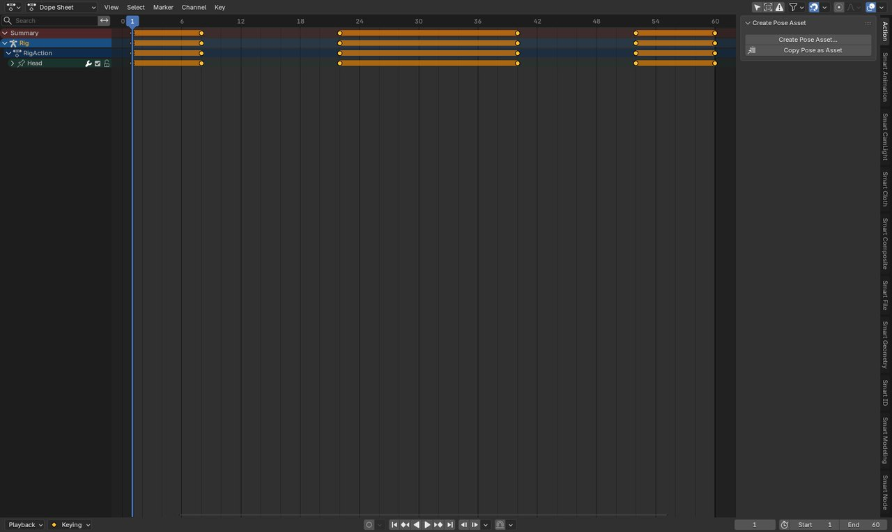
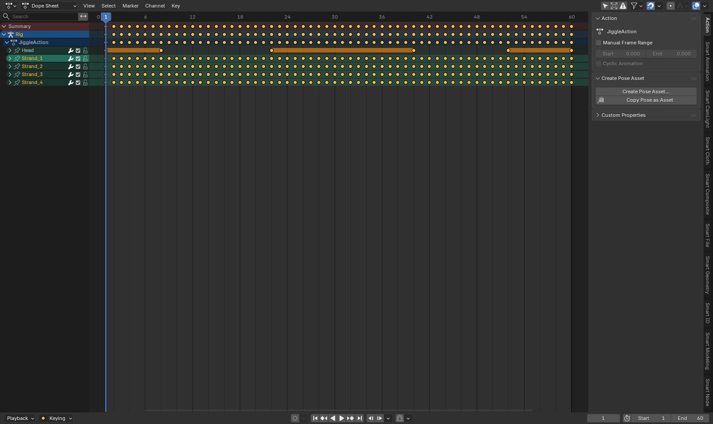
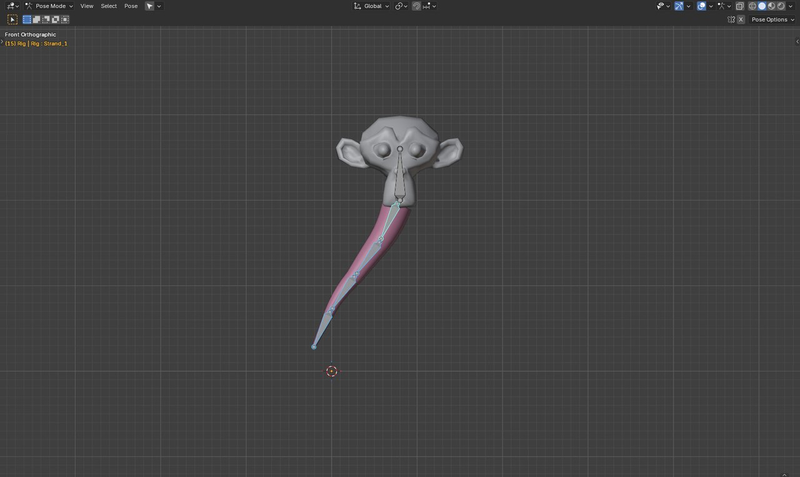
- Enable jiggle on the strand bones, and check the motion in playback.
- In Pose Mode, click "Bake Jiggle" in "Utilities / Bake / Presets".
- In the Dope Sheet, expand the action's rows and look at the keys for each bone.
What to look for: Before baking, only the Head bone has keys, at six points. After baking, the rows of the strand bones have keys on every frame in the playback range. After baking, "Freeze" in "Armature" is turned on, and the bones move as keyed. The jiggle that lags behind the Head's motion is also captured in the keys, so at frame 15 after baking, the tip of the Hair Strand still lags to the left, just as in playback.
ExampleBake Jiggle While Keeping the Original Action in the NLA(demonstrated on the Suzanne Head and the Hair Strand)
If you bake with "Current Action to NLA" turned on, the original action is kept as an NLA strip, and the new baked action is placed on top of it.
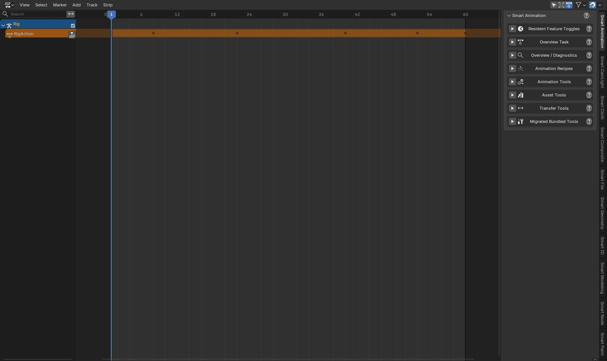
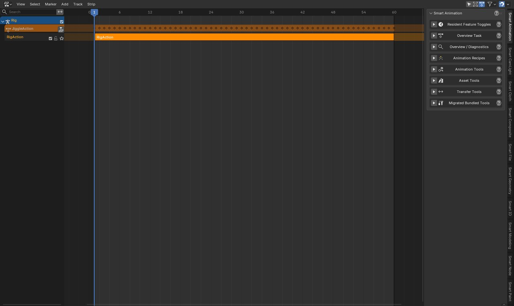
- Enable jiggle on the strand bones.
- Turn on "Current Action to NLA" in "Utilities / Bake / Presets".
- In Pose Mode, click "Bake Jiggle".
- Look at the rows in the NLA Editor.
What to look for: Before baking, there is only one row: "RigAction". After baking, a track and a strip named after the original action appear below, and the baked "JiggleAction" sits on top of them. Because the original motion is not lost, you can return to the original motion and the jiggle calculation by removing the upper action at the first frame and turning off "Freeze" in "Armature".
5-23. All Jiggle Commands
Jiggle operations that are not in any other section header.
Location"Jiggle Physics" > "All Jiggle Commands"
| Item | What it does |
|---|---|
| Disable Bone Constraints | Constraints are applied after jiggle and can cause unnatural motion, so this disables the constraints of the selected bones all at once. |
6. Common Tasks
Attach Cloth to Clothing in One Go, Inspect, Then Bake
Use Simply Cloth Studio to prepare cloth on clothing in one step, check for problems, and then bake.
- In "External Tool Integration", check that "Ready" appears under "Simply Cloth Studio".
- Open "Integration Targets" and enter the body mesh in "Body Collider".
- Select the clothing mesh.
- In "Smart Setup Options" under "Smart Workflow", choose the "Target Scope" and the "Quality Profile".
- Click "Smart Setup".
- In "Analysis / Diagnostics", click "Run Preflight" and check the report.
- In "Bake / Output", check that "Stop on Preflight Error" is on, and click "Safe Bake".
Result: Cloth is attached to the clothing, and it is baked if the inspection finds no errors. You can view the report with "Open Data Folder".
Lighten the Screen Only While Working in a Heavy Scene
Lighten cloth calculation and display only while posing, then restore it afterward.
- Open "Batch / Performance".
- In "Batch / Preview Options", choose the "Target Scope".
- Click "Apply Batch Preview".
- When you finish working, click "Restore Preview State" before baking.
Result: The cloth quality and modifier visibility return to the state before lightening.
Make a Skirt Switchable Between Bones and Cloth
Make it possible to switch how the skirt is driven, even without Simply Cloth Studio.
- Open "Reusable Skirt Setup" under "Smart Workflow".
- Enter "Garment Mesh", "Armature", "Skirt Bone Names", "Leg Bone Names", and "Collider Collection".
- Set "Cloth Setup Route" to "Smart Cloth".
- Click "Preview Mapping", then "Apply Setup", then "Configuration Consistency", in that order.
- Click "Save Mapping".
- Click "Bake and Check Intersections" and check the number of vertices sinking into the body.
- Click "Cloth" to drive it with cloth, and click "Bones" to return to bone motion.
Result: You can switch how the skirt is driven with a single button. The assignments are saved on the clothing.
Attach Rigid Bodies to Small Props and Drop Them
Create motion of an object falling onto a floor.
- Select the object to drop, and click "Add Active" in "Rigid Body Setup" under "Quick Rigid".
- Select the floor and click "Add Passive".
- Select the object to drop again, and adjust "Mass", "Friction", and "Bounciness" in "Active Rigid Body".
- In "Presets / Bake", click "Bake All Dynamics".
Result: The motion of the object falling onto the floor is recorded. To start over, click "Free All Bakes".
Jiggle and Bake a Lock of Hair
Add secondary jiggle to the hair bones, check it in playback, and turn it into bone keyframes.
- In "Always-on Toggles", set "Jiggle Callbacks" to "On".
- In "Scene Settings" under "Jiggle Physics", turn on "Enable Scene Jiggle".
- Select the armature, and click "Enable Armature Jiggle" in "Armature".
- In Pose Mode, select a hair bone, click "Enable Bone Jiggle" in "Active Bone", and adjust the values.
- Add the other hair bones to the selection (keeping the bone you set up as active), and click "Copy Settings to Selected".
- Play from the first frame to check the motion, and click "Bake Jiggle".
Result: The hair sways with a delay in playback. When you bake, keys are set on every frame of the hair bones, and the jiggle you saw in playback becomes keys as it is.
7. Troubleshooting
- "Not detected" appears under "Simply Cloth Studio", and some buttons are missing.
- Simply Cloth Studio is not included in this add-on. Install and enable it separately, then click "Refresh Status" (the icon with a circular arrow). "Apply Colliders" appears only when "Ready".
- Are there features that work without Simply Cloth Studio?
- Yes. "Apply Profile", the features of "Batch / Performance", "Precision / Collision", and "Analysis / Diagnostics", "Safe Bake" and "Free Bake", the "Smart Cloth" route and "Bake and Check Intersections" of "Reusable Skirt Setup", Quick Rigid, and Jiggle Physics can be used. "Smart Setup", "Apply Colliders", "Safe Finish", "Move Cloth to Simply", and "Create Cloth Simulation" require Simply Cloth Studio.
- Where are the settings and reports saved?
- Inside the Blender config folder, Smart_Cloth_Suite contains the settings file Smart_Cloth_Suite.json and the reports folder for reports. You can open it with "Open Data Folder".
- The Jiggle motion does not move.
- Check that "Jiggle Callbacks" in "Always-on Toggles" is "On". It is "Off" at first. Then check that jiggle is enabled on the scene, armature, and bone, and that the armature is not set to "Mute" or "Freeze".
- The "Active Rigid Body" section header does not appear.
- It appears only when the selected object has a rigid body. Click "Add Active" or "Add Passive" first.
- Can I undo operations?
- "Smart Setup" can be undone with a single Undo. The light display is undone with "Restore Preview State", the replacement with "Restore Original Cloth", and the bake to bones with "Clear Bone Bake". Even if you clear the bone bake, the original animation remains.
- If "Configuration Consistency" finds no problems, will the clothing not sink into the body?
- No. "Configuration Consistency" only checks whether the assignments and settings match. Count sinking with "Bake and Check Intersections", and check by eye in the end.
For problems common to every add-on, such as an add-on not appearing or the interface language not changing, see "Troubleshooting" in the SmartTools Overall Specification.
8. Glossary
- Cloth
- Blender's mechanism for calculating the motion of fabric. It is used for clothing and skirts.
- Simply Cloth Studio
- A separately installed cloth simulation add-on. SmartCloth Suite calls and uses its public operations.
- Collider
- An object that the cloth collides with. A body mesh or the like is used.
- Pin
- A vertex group that defines the parts of the fabric that do not move (the fixed parts).
- Bake
- Calculating and recording physics motion. Once recorded, playback becomes lighter.
- Point Cache
- The record that holds baked physics motion.
- Preflight
- Inspecting the settings for problems before baking.
- Quality Profile
- A group of settings that bundles values such as cloth calculation detail. They range from "Preview" to "Hero".
- Self Collision
- The calculation of fabric colliding with itself.
- Modifier
- A mechanism that changes the shape of an object afterward. Subdivision and Cloth are also modifiers.
- Vertex Group
- A set of mesh vertices given a name and weights.
- Shape Key
- A mechanism for recording differences in mesh shape and switching between them.
- Shrinkwrap
- A modifier that makes an object follow the surface of another object. It is used for "Outside Correction".
- Armature
- A set of bones. It is used to move a character.
- Pose Mode
- The mode for moving the bones of an armature to create poses.
- Rigid Body
- An object whose shape does not change that falls, rolls, and collides under physics.
- Active / Passive
- The types of rigid body. Active moves by force, and Passive does not move and serves as something to collide with.
- Jiggle
- Secondary jiggle, in which a bone sways with a delay after the movement.
- Undo
- Canceling an operation (Ctrl+Z).
9. Appendix: Version, Checksum and Limitations
| Add-on | SmartCloth Suite (smart_cloth_suite) |
|---|---|
| Version | 1.0.0 |
| ZIP | SmartClothSuite_1.0.0.zip |
| Size | 270,524 bytes |
| SHA256 | da7ceb56fa8e0afec8f038c9cd612246007ab7d0f22c034e618266d8ce555162 |
Limitations and Notes
- Simply Cloth Studio is not included. "Smart Setup", "Apply Colliders", "Safe Finish", "Move Cloth to Simply", "Create Cloth Simulation", and "Simply Cloth Studio" in "Cloth Setup Route" can be used only when Simply Cloth Studio is installed separately and enabled.
- "Configuration Consistency" only checks whether the assignments and settings match. It does not check that the clothing does not sink into the body.
- Even with "Outside Correction", surface sinking may remain.
- "Create Cloth Simulation" is refused if the original clothing already has cloth or shape keys. Whether the motion or the sinking is good or bad has not been checked.
- "Safe Topology Repair" skips meshes that have shape keys.
- Jiggle motion does not follow playback until "Jiggle Callbacks" is set to "On".
- The "Active Rigid Body" section header appears only when the selected object has a rigid body.
- Quick Rigid rigid body presets are deleted by choosing from the list that appears when you click "Delete Preset". To apply one, choose from the "Apply Preset" list or from "Presets" in the "Quick Menu".
- "Bake Jiggle" calculates using the keys of the current action as the original motion. If you bake again while the baked action is active, the jiggle stacks. To bake again, switch back to the original action first and then click it.
SmartCloth Suite Manual v1.0.0 / Built 2026-11-19